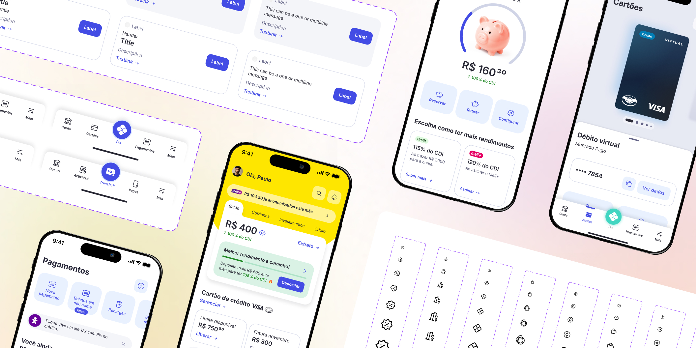

Cómo construimos el sistema de diseño de Mercado Pago antes de que existiera el oficial
Liderando durante dos quarters la creación de una librería de componentes propia, para que Mercado Pago pudiera salir a producción con su rediseño semanas antes de que Andes, el sistema de diseño oficial de Mercado Libre, lanzara su nueva versión.

Un sistema de diseño que todavía no existía
Mercado Libre estaba preparando una nueva versión de Andes, su sistema de diseño global, con lanzamiento previsto para agosto de 2025. Mercado Pago iba a ser la primera de las tres unidades de negocio (Mercado Libre, Mercado Pago y Shipping) en salir a producción con su rediseño — pero necesitaba hacerlo antes de que esa nueva versión estuviera lista.
Y no se trataba de un simple lavado de cara visual. La nueva app traía una experiencia actualizada, pensada desde el craft y con foco en una experiencia mucho más personalizada para cada usuario. El sistema de diseño tenía que estar a la altura de esas ambiciones — no solo verse distinto, sino sostener funcionalmente todo lo nuevo.
No había sistema de diseño que usar todavía. Había que crear uno propio, capaz de sostener el rediseño de los flujos más críticos de la app, sabiendo desde el día uno que en algún momento tendría que convivir con el sistema oficial que se estaba construyendo en paralelo.
Construir la librería mientras se construían las pantallas
En febrero de 2025 se armó un equipo dedicado — un Senior Design Expert liderando, dos UX Designers (yo entre ellas), y un equipo de IT trabajando en paralelo en las tres plataformas: web, Android e iOS.
Partí de definiciones visuales de alto nivel bajadas por liderazgo (tipografía, tokens, estilos base) y empecé por los componentes fundacionales. De ahí en más, el proceso fue iterativo: los equipos de delivery de cada flujo me traían sus necesidades, y cada solicitud era analizada para determinar si cumplía con los criterios para convertirse en una solución cross. Aquellas necesidades que sí cumplían con esa visión, eran componetizadas -siempre cumpliendo con los criterios de calidad de la librería y con una visión agnóstica que permitiera que el componente fuera reutilizado en contextos variados cross app.
En paralelo, IT codeaba y publicaba cada componente en los repositorios de las tres plataformas para que los equipos pudieran empezar a desarrollar sin esperar.
Al mismo tiempo que hacíamos crecer la librería según las necesidades que nos traían los equipos de delivery, yo sostenía una conversación y alineación constante con el equipo de Andes. Nuestro equipo tuvo un papel clave de cocreación del sistema de diseño general final junto a ellos: lideré esas conversaciones, negociando por un lado con los equipos de delivery, y por el otro con la lideranza de Andes.
Durante esta fase:
- Creé y disponibilicé más de 25 componentes y definiciones de uso, listos para ser consumidos por los equipos de delivery.
- Participé en la cocreación del nuevo sistema de diseño junto al equipo de Andes. Nuestro contacto directo con los equipos de delivery y producción que ya estaban diseñando flujos nos permitió aportar una visión más bajada a la realidad y con consciencia de los problemas y las necesidades reales de los equipos.
- Lideré múltiples conversaciones con equipos de delivery con el objetivo de asegurar el correcto uso y aplicación del nuevo sistema.
De librería de emergencia a sistema satélite permanente
En tiempo récord, a inicios de agosto de 2025 salió a producción el rediseño de Mercado Pago con los flujos prioritarios corriendo sobre el nuevo sistema — semanas antes de que Andes lanzara su nueva versión, a fines de ese mismo mes.
Cuando Andes lanzó su nueva versión, nuestra librería no desapareció: se dividió. Los componentes con alcance cross —los que también servían a otras unidades de negocio— pasaron a vivir dentro de Andes. Los que tenían un alcance específico para la BU de Fintech se quedaron en nuestra librería, que hoy sigue viva como sistema satélite: convive con Andes, lo complementa, y define sus propias guías de uso y buenas prácticas para todo lo específico de Mercado Pago.
Hoy soy parte del ownership de esa librería satélite. Concretamente:
- Lidero el mantenimiento de la librería, manteniendo siempre actualizados los componentes existentes e incorporando nuevos.
- Soy owner de la librería de iconografía: velo por la consistencia de todo el sistema iconográfico de Mercado Pago, cuido que se respete la correcta construcción de los íconos, y me encargo de sumar nuevos íconos y disponibilizarlos tanto en Figma como en desarrollo.
- Soy referente en la correcta implementación del sistema y sus pilares estratégicos. Desde el equipo bajamos definiciones y damos feedback constante a los equipos de delivery sobre el uso y la aplicación de componentes y guidelines. Hoy contamos con un canal de ayuda en Slack que ya reúne a más de 1.000 miembros activos.
- Soy owner de la plataforma de documentación de la librería: creé un site que reúne toda la documentación del sistema y la disponibiliza para que los equipos puedan consultarla en cualquier momento.
Este proyecto también trajo una nueva forma de trabajar puertas adentro de Mercado Libre: fuimos referencia en agilidad dentro de la compañía. Demostramos que un equipo chico, cuando cuenta con personas con capacidad de liderazgo y ownership, puede sacar adelante un proyecto extremadamente ambicioso en tiempo récord — y que salirse de la burocracia habitual de los procesos internos a veces permite avanzar en timings inusuales sin perder nunca la calidad de lo entregado.
Del Figma al código: mi ownership hoy también incluye desarrollo
Una parte central de mi trabajo diario es apoyarme en herramientas de IA (Claude Code, Codex) para ir más allá de las definiciones en Figma. Para los componentes nuevos, mi equipo y yo no solo diseñamos la solución: escribimos el código para las tres plataformas y abrimos los PRs correspondientes — IT los revisa y valida. Eso libera tiempo del equipo de desarrollo para enfocarse en tareas de mayor impacto.
Mi ownership de la librería ya no se queda únicamente en las definiciones de Figma. Hoy, entender y dominar conceptos de código es clave para poder entregar proyectos end-to-end y en tiempos muy reducidos — desde escribir componentes hasta automatizar tareas repetitivas, prototipar más rápido, y crear skills personalizadas de IA para el equipo. También me apoyo en IA para mantener y hacer crecer la plataforma de documentación.
Impacto medible, dentro y fuera del equipo
Los resultados fueron contundentes:
76%
de nuestros usuarios en Brasil prefieren la nueva experiencia
95%
de la experiencia de la app reescrita para Q4'25
Logramos lanzar un primer release de restyling en solo
2 Q's
sentamos las
bases
para la creación de nuevas librerías satélites